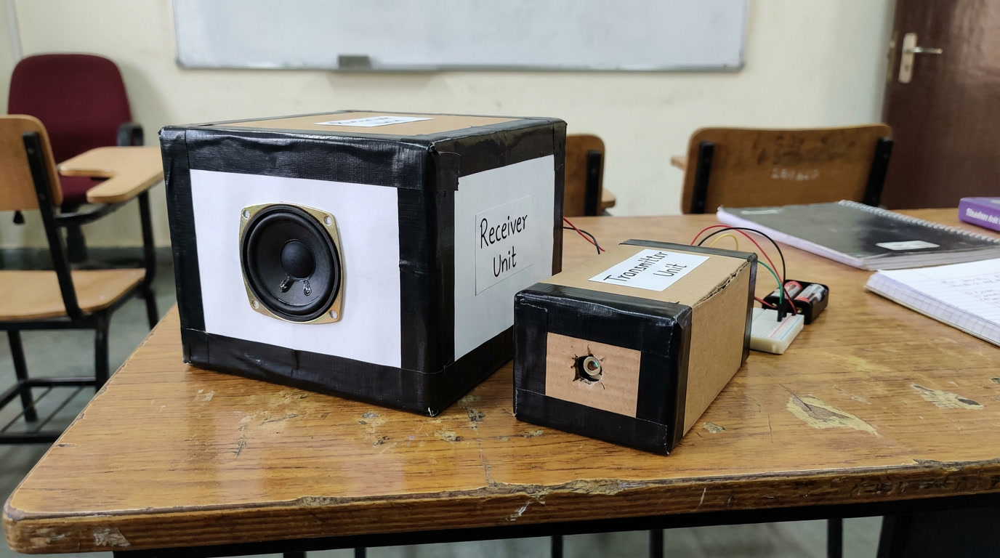
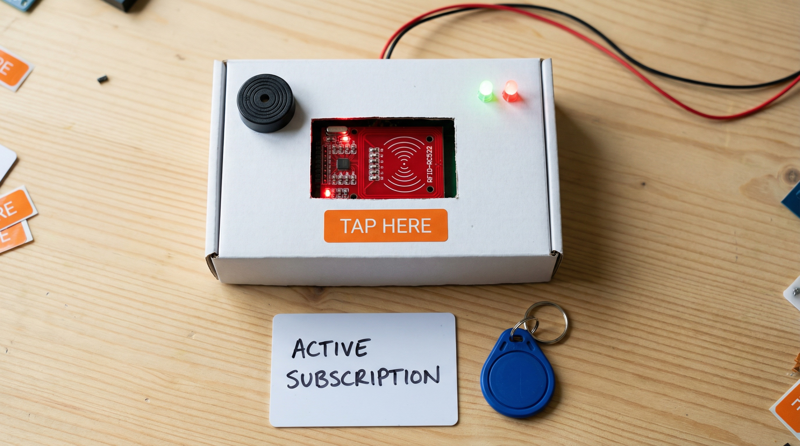

Developed an innovative wireless audio transmission system using laser light technology. This project demonstrates the principles of optical communication by transmitting high-quality audio signals through laser beams.
The system showcases the potential of Light Fidelity (LiFi) technology as an alternative to traditional radio frequency communication, offering enhanced security and reduced electromagnetic interference.
Developed a fully responsive and interactive portfolio website to showcase my technical skills, certifications, and projects. The website is designed using modern web technologies with a focus on performance, accessibility, and clean UI/UX principles.
It serves as a centralized platform to demonstrate my development journey, practical experience, and continuous learning in the field of technology.

Built UNIFIT, a smart NFC-powered gym management system that transforms traditional memberships into a connected fitness network.
Users can tap to enter gyms, automatically log attendance, and access multiple locations with a single subscription. The platform includes a real-time dashboard for tracking usage, managing branches, and analyzing gym activity.